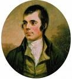

The Community Website for the Village of Llanvair Discoed

Caerwent Community Council © 2013-
Designed by breezegraphic.com
*****************************************************************************************************************************************************
St Mary’s Church Newsletter Spring 2013 is available to view
Please click here to read
******************************************************************************************************************************************************
Every first Wednesday of the month at 1 PM -
*******************************************************************************************************************************************************
2012
Sunday 9th December 2012
The Woodlands Tavern presents
Festival of Christmas Carols with
The Wooden Tubes
Festivities commence at 4 pm
Further details here
*******************************************************************************************************************************************************
Diamond Jubilee Celebrations
1 & 2 June -
4 June -
Details tba
*******************************************************************************************************************************************************
Past Events
2012
Burns Night at the Woodlands Tavern was another great success. Not only did we have a superb address to the haggis but also an amusing reply, as well as Jim's first 'outing' on the bagpipes!
2011
BEST KEPT VILLAGE COMPETITION
Unfortunately, despite our best efforts we did not win the best village competition. Redwick won in our category. Congratulations to them. However, I hope you all agree that the village still looks lovely, in fact probably better than in June. And while it would have been nice to win, the important thing is that we all made an effort and succeeded in making Llanvair Discoed look even better. The judges said it was very close and all the villages looked lovely. Phil has offered to find out what let us down so we can improve next year (if we want to...). Thank you again to everybody for your help and support. Details about the competition are here
22 October -
6 October -
22 September -
12 June -
29 January -
2010
7th October -
27th September -
{kind=link}
23rd September -
Throughout June -
13th June -
Art and Photographic Exhibition at St Mary's Church, 28th -
3rd May -
30th April -
30th January -

We had a 'real' person this year to recite Burns and it was fabulous! Thank you Jim! And a big thanks to Suzanne for organizing it!
22nd January -
The Winter Solstice brought a fresh look to the village with an unexpected snowfall! Some hardy villagers climbed to the top of Gray Hill to see in the sunrise and were rewarded with spectacular views. Since then it has, of course snowed much more and to see all the pictures, please click on the pictures below or visit the Gallery .
If you have any photographs you would like to share with everyone, please email -
*******************************************************************************************************************************************************
2009
Look what happened at The Woodlands! We knew Sue and Keith had applied for an extension but is this what they had in mind?
Drive in at the Woodlands
The total amount collected for Clive was £820.00 and this has been passed on to his family. We hope and pray that he will make a complete recovery and our thoughts are with him.
24th December -
21st December -
20th December -
19th December -
4th December -
13th November 2009 -
6th November -
The raffle raised £601 for MS. Together with the £315 raised through the Holiday in France raffle we have now £916 to donate. 50% of this will go to the Newport MS Society and 50% to the national MS Society. A bigTHANK YOU to everyone who supported this cause!
8th October 2009 -
We enjoyed a Church Service with Fr Will, followed by a tasty supper in the Woodlands Tavern.
An evening at Penhein
The PCC (and the village!) would like to thank Richard and Ruth Micklethwaite for allowing the use of their house during the inclement weather we had on the evening of 11 July! A great evening was had by all and we are on track to raise £790 for the church floor fund!
Pictures are on the Gallery page.
Confirmation Service
The Bishop of Monmouth The Rt. Revd Dominic Walker OGS made his first visit to St. Mary's Church on Sunday 14th June and confirmed 8 people into the Church in Wales. The service was well represented by local parishes and we had almost 60 people in church to welcome the Bishop and to celebrate the people being confirmed.
Martin Singers
We would like to say a BIG thank you to all the Martin Singers who came and performed
a lovely concert in the church recently. The new chairs we have really helped us
to provide a real concert-
Pictures are on the Gallery page.
A walk on the wild side...
Helen John of the Gwent Wildlife Trust arranged a walk around one of the outstanding
local areas near to Usk on Sunday 21st June for 18 of us villagers. It was a great
day out, a fantastic walk with many people picking up a lot more knowledge about
the local plant life -